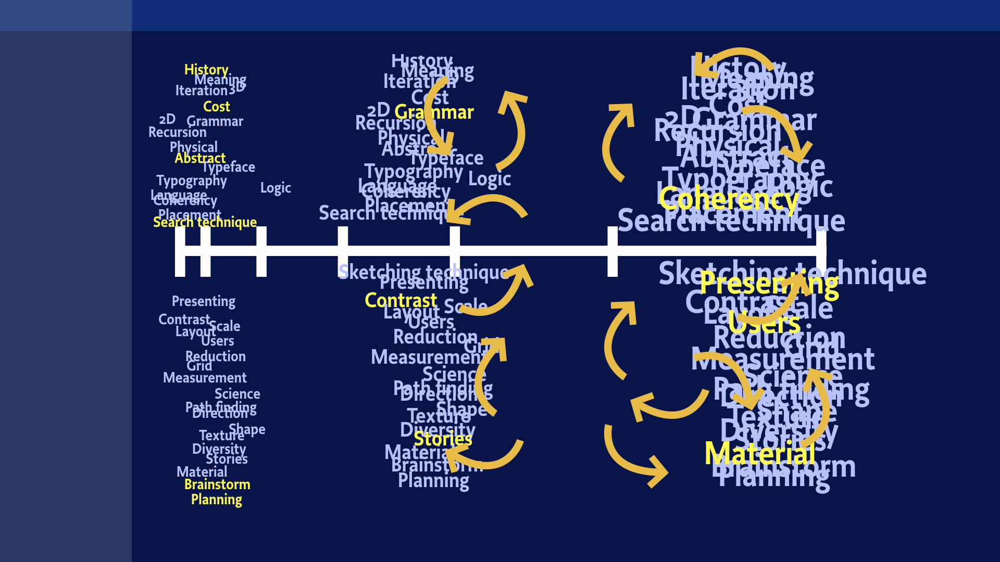

cid = 'Website'
# H O M E
doc.title = 'Design Design Space'
page = doc.newPage(title='Home', name='index.html', template='home')
doc.footerHtml = """Let us know what you think. Do you have any questions for us? info@designdesign.space
"""
box = page['Introduction']
The Design Design Space program for 2018: Locations, dates and topics. Check for the available spaces left.
"""What are the dreams and dragons in your design process? How do you change a plan into a planning and mistakes into treasures? Where can you find the design space to develop?"""
box = page['Featured']['Image']

box = page['Featured']['Side']
Repeat to improve
What makes a design process fundamentally different from a production process, is that repetition improves the result. Starting with quick sketches, ignoring most details, next steps take more time. It’s not a linear process, it’s an iterative process, which means repeating the previous step in more detail.
Contact us
box = page['Main']['Content']
Program 2018
What is it?
Design Design Space is an online coaching environment to develop your design skills. Query your questions and improve your sketching. Acquire new techniques and research your way of presentating. In short, a space where you can design your design process.
What kind of challenges do you experience in your daily work as a designer?
Working closely together online with experienced designers and a group of other students, there is space to define your own study topics and challenges. In fact, such a selection and planning process is an integral part of the study itself. You tell us what you want, and together we’ll find a way to get there.
Find the planned program of studies and workshops below. Contact us if you are interested.
Python scripting for typedesigners (4 weeks)
February 5 - March 5 (Online, 6 places left) $1.900
During this 4 week course, typedesigners learn from scratch how to script micro and macro tasks, during their type design process. In a series of short specific assignments, if possible closely related to their daily tasks, the designers learn to recognize design patterns that can be automated, breaking them down into existing functions and ones that need to be developed.
The study will address Python syntax, specifics of scripting for (type)design, planning, testing, basics of UI/UX design, usage of GIT, PageBot and Variable Font proofing scripts and the specifics of output formats such as fontfiles and documents for print and online usage. During the study, students will build their own QA-knowledge base in the form of scripts that test the current status of their designs and font files.
Special emphasis is on how to design the process to write software for designers. This aspect makes the project of 4 weeks into a real study, different from online courses “Python scripting”.
The online workshop builds up from an intensive mixture of personal hangouts, group hangouts, live online presentations by teachers and students, code and document sharing through GitHub and presentations through documents and movies.
Each study concludes with an online presentation hangout to all participants and guests and results that can be made public will remain visible through the website of the project.
Python scripting for graphic designers
February 22 + March 14/15 + March 21/22 (On location Den Bosch NL)
This is a closed workshop for Master Students Graphic Design St. Joost. Five days of lesson, spread over 4 weeks, will challenge the students to take one or more of their graphic designs and then design the algorithms that either automate production or can be used to generate alternative versions of their original design. These algorithms will be translated into Python coding, for which a sequence of short exercises to learn systax and code patterns.
Robothon | Design Design Space Party
March 8 (On location, Delft. Free for all Robothon participants)
Traditional Robothon party in Delft, sponsored by Design Design Space.
Scripting Variable Fonts specimens for typedesigners using PageBot
March 8 or March 9: Lecture during Robothon (KABK, The Hague)
Petr van Blokland will contribute to Robothon with a demo of open source scripts running in DrawBot/PageBot, generating specimens for Variable Fonts, with layouts and info-graphics that adapt to the types and amount of variable axes and the relations between them.
Python scripting for typedesigners (3 days)
March 10-12 (Special Robothon edition, on location in Delft, 12 places left) $450
As condensed version of the 4-week “scripting for typedesigners” study, these 3 days will address the highlights in order to set typedesigners in the right direction of thinking. The intend is to give designers an overview of their potential toolset and paths how to develop themselves further in their design practice.
Upon request, special emphasis can be put on the development of scripting for Variable Font design and proofing.
Scripting Variable Font specimens for typedesigners using PageBot (1 day)
April 15 (After Typolabs, on location Berlin, 12 places left) $150
As condensed version of the 4-week “scripting for typedesigners” study, this single day will address the highlights in order to set typedesigners in the right direction of thinking. The intend is to give designers an overview of their potential toolset and paths how to develop themselves further in their design practice.
Upon request, special emphasis can be put on the development of scripting for Variable Font design and proofing.
Design models (1 day)
April 24 (Online, 10 places left) $150
Focus of this one day workshop is on the development and selection of modeling by graphic designers, typographers and type designers. Any design process can only work by managing the level of details. Sketching and the making of small scale models is such a technique, where the design can get an impression about design choices in early stages of the process, without actually making the “real thing”.
Similar techniques apply to the development of parameters and writing code. The workshop does put special emphasis on the integration of all these techniques into one extended toolset that designers can select from.
The online workshop builds up from an intensive mixture of personal hangouts, group hangouts, code and document sharing through GitHub and live online presentations by teachers and students.
How to deal with customers? (1 day)
April 26 (Online, 11 places left) $150
Use cases, models, simulations, sketching and presentation techniques are the subject of this 1 day workshop how to deal best with customers. Students are offered to thing about planning in relation to what they charge for their design. The workshop does address the difference between cost and investment, leasure and learning, with special attention on the success of failure.
Python scripting for graphic designers (4 weeks)
May 7 - June 4 (Online, 9 places left) $1.900
During this 4 week course, graphic designers learn from scratch how to script micro and macro tasks, during their design process. In a series of short specific assignments, if possible closely related to their daily tasks, the designers learn to recognize design patterns that can be automated, breaking them down into existing functions and ones that need to be developed.
The study will address Python syntax, specifics of scripting for (type)design, planning, testing, basics of UI/UX design, usage of GIT, PageBot scripts and the specifics of output formats such as documents for print and online usage. During the study, students will build their own QA-knowledge base in the form of scripts that test the current status of their designs and output files.
Special emphasis is on how to design the process to write software for designers. This aspect makes the project of 4 weeks into a real study, different from online courses “Python scripting”.
The online workshop builds up from an intensive mixture of personal hangouts, group hangouts, code and document sharing through GitHub, live online presentations by teachers and students, presentations through documents and movies.
Each study concludes with an online presentation hangout to all participants and guests and results that can be made public will remain visible through the website of the project.
TypeLab
June 14-16 (On location during Typographics New York, 3 days) Free for participants of Typographics
The TypeLab at Typographics 2018 will host a series of hands-on workshops, demos, interviews, and experiments, June 14–16. Keeping with its alternative roots, the TypeLab is a space for informal events to complement the main schedule of the Typographics conference – like a multi-day typographic hackathon.
Design Game
June 17 (On location during Typographics, Cooper Union, New York, 1 day) Participation is free.
This event is for designers of all experience levels, students, educators and other professionals. It’s an intensive 4+ hour event, come on time and plan to stay.
Did you ever want to know what clients try to talk about? And why designers always run out of time? Why design processes are not linear and thinking always is? And how to do that as a team? Would you know how it is to balance on the wrong foot? Or why you never should participate in pitches?
36 designers, 9 studios, 3 customers, 13 tables, 42 chairs, 26 designs, 4 rounds and your set of physical drawing tools make the simulated design space where you can seek answers to these questions. But even then, the Design Game may not give you any. But for sure, you’ll get a hell of experience, never to forget.
Various workshops around Typographics
Dates and topics to be defined (On location, Cooper Union, New York)
Similar to the Typographics workshop “How to Code All Your Graphic Design: Designing the Design Process with PageBot” workshops will be origanized. Dates and topcis to be defined.
Live coaching your (type)design project
Online, customized planning and topics. Ask for details on time and price.
You have this challenging complex design project to work on. It is really interesting and rewarding, but also hard to get control about planning and quality. Especially if the project runs over a longer period of time and if there is other people involved. Design Design Space offers the opportunity of live coaching. How this is origanized depends on your needs. It can be one day of support while writing the quote, up to helping you with management and feedback of the entire project. All customized to what is required and available as budget.
Live coaching uses an intensive mixture of personal hangouts, group hangouts, live online presentations by coaches and designers, code and document sharing through GitHub.
Live coaching while starting your studio
Online, customized planning and topics. Ask for details on time and price.
You are in the working of starting your own studio. Either recently graduated or you have been working in a design studio for years and now it is time to start your own. It is promising to be really interesting and rewarding, but also hard to get control about planning, budget and how to acquire clients or paying users. Design Design Space offers the opportunity of live coaching. How this is origanized depends on your needs. It can be one day of support, going through your plans and responding to them, up to helping you with management and feedback of the entire setup. All customized to what is required and available as budget.
Live coaching uses an intensive mixture of personal hangouts, group hangouts, live online presentations by coaches and designers, document sharing through GitHub.
Virtual sabbatical
Online, customized planning and topics. Ask for details.
$ 150 (one day) $ 900 (one week) $ 1.900 (one month) $ 3.900 (a season) $ 7.900 (a year)
You have been working as designer for years now, as part of a studio or on your own. You have been really succesful or a bit less, in any case there can be a point to answer the question “What’s next?”. At the same time you don’t think you have the age or freedom or financial resources to take a real sabbatical break and do a Master study abroad for 2 years. Design Design Space offers the opportunity of doing a virtual sabbatical: studying new topics or deepen that ones you already know in a challenging online environment. Together with other students that are searching for the same kind of extension to their professional career. How this is origanized depends on your needs and resources. It can even scale down to a single day project, or take a whole year or any period of time inbetween. All customized to helps you best and what is available as budget.
Sabbatical coaching uses an intensive mixture of personal hangouts, group hangouts, live online presentations by coaches and designers, document sharing through GitHub.
ATYPI Special: Scripting Variable Font specimens for typedesigners using PageBot (1 day)
September 17 (On location Delft, 20 places left) $150
This one day condensed workshop, on location in Delft, shows how to develop designer scripts for Variable Fonts using DrawBot/PageBot, generating specimens, with layouts and info-graphics that adapt to types and amount of variable axes and the relations between them. Due to the condensed nature of the workshop, some experience with DrawBot coding is recommended.
Design the Design Process
October (On location Den Bosch NL)
This is a closed workshop for Master Students Graphic Design St. Joost. Five days of lesson, spread over 4 weeks, will challenge the students to take one or more of their graphic designs and then design the algorithms that either automate production or can be used to generate alternative versions of their original design. These algorithms will be translated into Python coding, for which a sequence of short exercises to learn systax and code patterns.
Programming typography (1 week)
October 1-8 (Online, 16 places left) $900
Take one of your more complex typographic projects, that you previously made manual in InDesign. Then ask yourself how the design and production could have been automated using your own scripts? And how much more alternatives could you have visualized? And how much less boring production it would have cost you. This one week workshop shows directions to get algorithms to work, for the parts you shouldn’t want to do as designer. And safe your time for real design work. Some experience with DrawBot coding is recommended, but not required for the week of study.
The online workshop builds up from an intensive mixture of personal hangouts, group hangouts, live online presentations by teachers and students, code and document sharing through GitHub and presentations through documents and movies.
Each study concludes with an online presentation hangout to all participants and guests and results that can be made public will remain visible through the website of the project.
Project management for typedesigners (1 day + 1 week + intermediate support)
October 15 and October 22-29 (Online, 16 places left) $1.200
You have this challenging complex design project to work on. It is really interesting and rewarding, but also hard to get control about planning and quality. Especially if the project runs over a longer period of time and if there is other people involved. This workshop addressed techniques to get this control, and even better make the iterations and failues feed back into your knowledge base and skill set.
The online workshop builds up from an intensive mixture of personal hangouts, group hangouts, live online presentations by teachers and students, code and document sharing through GitHub and presentations through documents and movies.
Rapid prototyping for graphic designers (1 week)
November 5-12 (Online, 16 places left) $900
With the definition that design is “management of details”, the design process is essentially controlling the amount of details relevant to a certain stage. In order to get insight on how realistic an idea is (on any level of a project), prototype must be made, as early in the process as possible. This is a very generic characteristic of design. This workshop offers an overview and the development of some prototyping techniques for graphic designers, typographers and typdesigners using a mixture of physical sketching, standard digital tools and coding. Focus of the workshop is to give students enough options and directions to develop themselves further.
The online workshop builds up from an intensive mixture of personal hangouts, group hangouts, live online presentations by teachers and students, code and document sharing through GitHub and presentations through documents and movies.
Sketching techniques (1 day + 1 week + intermediate support)
November 19 and November 26-December 3 (Online, 16 places left) $1.200
Similar to the “Rapid Prototyping” workshop, this too addresses the management of details. But instead, it is more focussed on developing sketching skills than the making of working prototypes.
This workshop offers an overview and the development of sketching techniques for graphic designers, typographers and typdesigners using a mixture of physical sketching and coding. Focus of the workshop is to give students enough options and directions to develop themselves further.
Online workshops builds up from an intensive mixture of personal hangouts, group hangouts, live online presentations by teachers and students, code and document sharing through GitHub and presentations through documents and movies.
Design Design Space
Is it for you?
By definition designers are bad planners. It seems to be fundamental to design. Too optimistic in the beginning – “There is still plenty of time”, a design is never finished – “The next one will always be better”. Do you recognize?
However, the fact that most designs are supposed to meet external requirements, the final deadline may have a much larger impact on the quality of the result, than the personal opinion of the designer.
How do you make this apparent conflict work to your advantage? Would you benefit from exercises and coaching?
How much time do you need?
The core idea behind designing the design process, is that it doesn’t make a difference for how long you do it. A project of 1 hour, basically goes through the same stages (research – design – presentation) as a project of 1 year.
Of course, it does matters how long you study something, for the level of details that can be addressed. But if you only have a day or a week for an assignment, then that is part of the requirements. The result can still be better than anything your customer would have done.
How would you design such a design process better next time?
"""
### 1 day • 1 week • 1 month • 1 season • 1 year
Study lengths range from 1 day, 1 week, 1 month, 1 season and possibly 1 year, whatever fits best to your plans, your practical possibilities and your financial situation.
### What does it cost?
* 1 day $150 (Design Game, group of minimal 12)
* 1 week $900 (7 days, group of 4 or more)
* 1 month $1,900 (calendar month, individual or group)
* 1 season $3,900 (3 calendar months, individual or group)
* 1 year $7,900 (individual or group)
Prices are per person. Discount or split payment for the month, season and year trainings can be discussed, depending on your personal situation.
For corporate trainings, groups or customized requests, please contact us.
Students who whish to extend one training level into another, a 50% reduction is applied on previous payed tuition. E.g 1 day followed by 1 week: 1/2 $150 + $900 = $975. Or 1 week followed by 1 month: 1/2 $900 + $1,900 = $2,350. Or 1 week followed by 1 season: 1/2 $900 + $3,900 = $4,350
### What is the schedule & how to submit?
Every 6 months, in March and September, a new day-week-month-season-year sequence starts, most likely if there is enough participating students.
Day-week sequences or single day Design Games can take place on other dates during the year, if the amount of participants makes it possible.
Since working as a team of students a minimum amount of three is required, and also a mininum level of quality, motivation and experience.
Season and year-students are admitted after showing their portfolios and the result of a given assignment. Also they are asked to write a motivation and development plan.
Students that finish a training adequately, automatically get accepted for a next.
"""
Experience
Design Design Space taps into 35 years of studio projects and over 50 years of combined experience of design education. Projects ranging from corporate identities, type design, typographic software, interiors, environmental design and running Design Games.
 Design Game on location at OTIS College of Art and Design. Although the online training obviously doesn’t include this direct way of working together, it is the aim to offer the best possible online design space, using the latest technology.
Design Game on location at OTIS College of Art and Design. Although the online training obviously doesn’t include this direct way of working together, it is the aim to offer the best possible online design space, using the latest technology.
AAAAA
BBBBBAAAAA
BBBBBAAAAA
BBBBBAAAAA
BBBBBAAAAA
BBBBBAAAAA
BBBBBAAAAA
BBBBBAAAAA
BBBBBAAAAA
BBBBBAAAAA
BBBBBAAAAA
BBBBBAAAAA
BBBBBAAAAA
BBBBBAAAAA
BBBBBAAAAA
BBBBBAAAAA
BBBBBAAAAA
BBBBBAAAAA
BBBBBAAAAA
BBBBBAAAAA
BBBBB
box = page['Main']['Side']
 What does your design profession look like 5 years from now? Or 20? Will your current skill set still be sufficient? How to make yourself independent from the changes in design that are likely to happen? Or better, how can you use them to our advantage? Read what Design Design Space has to offer.
What does your design profession look like 5 years from now? Or 20? Will your current skill set still be sufficient? How to make yourself independent from the changes in design that are likely to happen? Or better, how can you use them to our advantage? Read what Design Design Space has to offer.